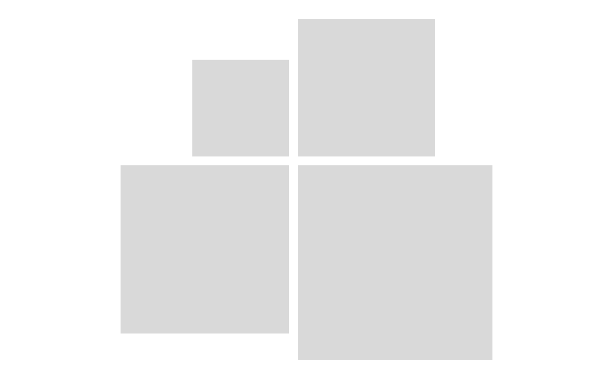

Create a 2×2 rectangle layout
rect_plot4.RdCreates a plot consisting of four rectangles arranged in a 2×2 layout.
Rectangle areas are proportional to the supplied numeric values.
Values can be supplied directly with value or taken from a column
in data using value_col.
Usage
rect_plot4(
data = NULL,
value = NULL,
value_col = "value",
aspect_ratio = "square",
gap = rect_defaults$gap,
padding = rect_defaults$padding
)Arguments
- data
Optional data frame containing one row for each rectangle. Only the first four rows are used. If omitted, supply rectangle values directly with
value.- value
Numeric value or vector of values used to determine rectangle areas. When
datais omitted, at least four values must be supplied and only the first four are used.- value_col
Name of the column in
datacontaining rectangle values.- aspect_ratio
Desired rectangle aspect ratio. Can be
"square","golden", a ratio string such as"1:2", or a numeric vector such asc(1, 2).- gap
Relative spacing between rectangles.
- padding
Relative padding around the complete layout.
Value
A Rectangler plot object (a ggplot) that can be extended with
additional Rectangler layer functions.
Details
The returned plot can be further customised by adding Rectangler layers,
such as rect_style(), rect_label(), rect_shape(),
rect_shape_label(), or rect_annotation().
Examples
rect_plot4(value = c(10, 20, 30, 40))

rect_plot4(rect_data_demo, value_col = "value")